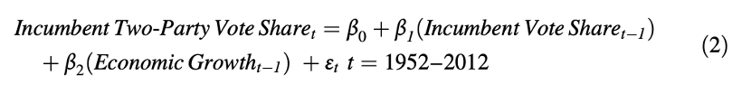

收录于合集 #美国研究 24个

作品简介
作者： J Bradford Jensen, 乔治城大学麦克多诺商学院教授；Dennis P Quinn，乔治城大学麦克多诺商学院教授；Stephen Weymouth，乔治城大学麦克多诺商学院副教授。
编译： 聂涵琳（国政学人编译员，中国人民大学国际政治经济学）
来源： Jensen, J., Quinn, D., & Weymouth, S. (2017). Winners and Losers in International Trade: The Effects on US Presidential Voting. International Organization , 71(3), 423-457. doi:10.1017/S0020818317000194
**** 归档： 《国际关系前沿》2021年第9期，总第36期
摘要
国际贸易直接影响美国总统选举，本文构建了衡量一个行业可贸易性的新指标，探讨了日益增长的服务业可贸易性与美国在服务贸易中的巨额顺差对选举的影响，认为制造业进口竞争带来的就业不安全感减少了对现任者的政治支持。本文提出，在高技能（high- skilled）可贸易商品和服务业就业工人数较多的县，现任政党的得票率上升，而在低技能（low- skilled）制造业就业较多的县，得票率下降。现任政党在拥有众多低技能制造业工人的摇摆州特别容易失去选票。本文认为增加进口（出口）与减少（增加）现任总统的选票份额有关，因此选举人团有动机保护制造业，反对贸易协定。
01
美国贸易一体化、经济归因与总统选举
目前的政治学研究拥有研究经济状况如何影响投票的悠久传统，学者们认为积极的经济表现极大地改善了现任或现任政党连任的前景。然而宏观模型总是假设经济表现的某些方面是现任支持率的关键决定因素：经济增长、可支配收入、就业、就业增长和营商意欲等，忽略了贸易对投票结果的直接影响。本文对现有文献提出了两点修改：一是本文在县级使用了最新可用的服务贸易风险敞口指标来证明，受雇于可贸易、高技能行业的工人作为贸易的可能赢家更有可能投票给现任者及其政党。二是本文在地方和国家层面的分析为贸易和美国总统选举之间的关系提供了更全面的图景。县级数据虽然只包含六次选举，但可以更精细地洞察经济状况，并纳入准确估计的公民贸易风险敞口的衡量标准。国家级模型虽然精确度和自由度较低，但允许考虑直接贸易流动和更多的选举次数（可追溯到1936年）。
（一）贸易一体化对总统选举的可能影响
**
**
服务业贸易风险敞口可能会影响美国大选中的投票行为，对服务业的重视基于以下三个事实：首先，服务业规模较大，占美国劳动力的80%以上。图1显示了制造业与商业和专业服务业这两大主要可贸易就业类别的就业比重变化。随着国际一体化程度的提高，服务业中即使只有相对较小的一部分受到贸易影响，也可能会影响到比制造业更多的工作岗位。其次，虽然传统上认为服务业在很大程度上是不可贸易的，但随着技术变革和金融往来账户自由化使知识产权等无形资产的贸易成为可能，服务业的“可贸易性”（tradability）已显著增加。第三，可贸易服务业相较于非贸易服务业和制造业的技能密集度更高。赫克歇尔- 俄林贸易理论 （Heckscher-Ohlin Model）表明，拥有丰富要素的国家将在密集使用该要素的行业中拥有相对优势。美国持续且不断增长的服务贸易顺差证明，它确实在服务方面拥有比较优势，这与其庞大且持续的货物贸易逆差形成鲜明对比。
图1 1990-2016年美国就业构成的变化
由于美国是一个在高技能活动中具有比较优势，而在低技能活动中处于比较劣势的国家，可贸易的商业服务活动与美国的比较优势一致，因此高技能可贸易服务活动中的公司和工人将从服务业可贸易性的增加中受益，低技能、劳动密集型可贸易制造业的公司往往面临更激烈的进口竞争，特别是在贸易协定使以往贸易孤立的国家和中国进入全球经济的情况下，工人的投票行为也将因此有所改变。
不同行业工资溢价的差异和工业生产的地理集中度加大了贸易风险敞口影响的差异。如图2上方所示，从事可贸易商业服务的工人通常集中在城市地区和东西海岸。而图2下方显示，制造业工人往往集中在中西部和南部各州，其中许多为“摇摆州”。工人在不同部门之间的转换会带来工资成本，在地理和行业上都会有适度的流动。
除此之外，本文认为雇员的选票会反映他们所属行业、雇主和他们本身经济情况的经验。在具有比较劣势的贸易部门生产的公司的员工，特别是低技能员工很容易受到日益激烈的贸易竞争的影响；在美国具有比较优势的行业中，特别是高技能员工能直接感受到美国贸易一体化的好处。
图2 2012年按县划分的比例就业份额（0-1.0）
（二）衡量可贸易服务业
考虑到美国经济分析局提供的数据具有的缺陷和限制，本文作者采用了Jensen与Kletzer开发的方法，根据美国北美工业分类系统（NAICS）国家产业界别行业的地理集中度对行业可贸易性进行分类，从而确定制造业和服务业分类行业中可贸易性的差异。假设当产量超过当地需求时，过剩的供应必须在其他地方消费，即出口到另一个地区。本文将相同的基尼系数作为服务业的可贸易性界限。如果一个服务业行业的基尼系数高于导致90%雇佣劳动力被标记为可贸易的，那么该行业就是可贸易的行业。
根据国际收支平衡表公约和世界贸易组织的《服务贸易总协定》对服务贸易的定义，共有跨境出口（模式1）、境外服务消费（模式2）、在海外的商业存在（模式3）和外国服务承办商（模式4）四种模式，本文基于美国生产的地理集中度来衡量可贸易性，反映了模式1、2和4对就业的影响。需要说明的是，《服务贸易总协定》下的可贸易性不同于离岸性的概念，后者涉及从国外履行工作职责的能力。并不是所有可贸易服务和可贸易制造业工作都是可离岸的。
表1提供了制造业和服务业中分类为可贸易和不可贸易、高技能和低技能的行业的例子。被归类为可贸易的制造业是众所周知的地理上集中，被归类为不可贸易的制造业都有很高的运输成本与价值比，生产分布在美国各地，国际贸易份额较低。服务业方面计算机系统设计服务、投资银行和软件出版都是高度可交易的，地理上都集中在美国。信用卡发行、游乐园和豪华轿车服务则是地理上集中的与旅游相关的行业，为来自世界各地的客户提供服务。不可贸易的服务业如餐馆、牙医诊所和杂货店的交易成本相对于价值都很高，生产分布在美国各地。
表1 按可贸易性、产品和技能进行的行业分类
除了可贸易性，本文还认为技能强度是贸易风险敞口的一个重要维度，高技能密集型活动与美国的比较优势是一致的。因此本文认为面对贸易自由化，美国应该专注于这些活动（即这些行业应该相对于其他行业增加）。相比之下，低技能密集型产业与美国的比较优势不一致，应该随着贸易自由化而萎缩。本文采用企业的平均工资作为标准来识别高技能和低技能公司的工人。
（三）假设与实证意义
根据上述讨论，本文进行了以下区分：可贸易商品和服务与不可贸易商品和服务（即是否可在国际上竞争），高技能工作与低技能工作（与比较优势一致），以及制造业与服务业（根据行业间的工资差异）。基于此得出以下建议：
1、由于低技能的可贸易制造业工人的产品是可贸易的，而且密集使用美国缺乏比较优势的生产要素，他们正因国际贸易竞争而遭受严重的经济损失。与从事服务业工作的同龄人相比，他们的产业间工资差距相对较大。这些员工可能会投票反对现任者。
2、由于美国在高技能活动中的比较优势，高技能可贸易服务业工人正从日益全球化中获益，这与美国在教育程度上的要素丰富性是一致的。这些员工可能会投票给现任者。
3、制造业的高技能工人有工资溢价（由于行业间的工资差异），这有助于该行业潜在的进口有效性，因为员工工资“高于”技能要求。然而，美国拥有丰富的熟练工人，一些美国制造公司大量使用这些工人。预计平均而言，高技能制造业的员工会支持现任者。
对于贸易风险如何影响低技能可贸易服务业工人的投票，本文有不确定的预期。这些工人被取代的风险比低技能制造业工人的风险要低，因为他们的替代雇主支付的工资相似（即服务业的行业间工资差异较小）。
在县级，本文预计：
H1：高技能可贸易服务业和制造业的更多工人将与对现任者的支持增加相关。
H2：低技能可贸易制造业的更多工人将与对现任者的支持减少相关。
H3：非贸易行业就业的工人数量与对现任者的支持率之间没有统计意义的关联。
在国家层面，本文预计：
H4：进口（出口）将与对现任者的支持减少（增加）相关。
02
县级选民的贸易风险敞口与总统选举
本文的贸易风险敞口就业衡量标准涵盖了高工资和低工资的可贸易服务业和制造业的就业情况。通过来自人口普查局纵向业务数据库（Longitudinal Business Database）的数据，能够衡量以下员工的数量：（1）从事贸易活动，生产美国具有比较优势的商品和服务（例如，高技能、资本密集型）和（2）在易受进口竞争影响的职位，如低技能制造业。由于商品和服务的贸易和非贸易行业都存在技术创新和生产率提高，本文以一个县的非贸易制造业和服务业就业为基准，比较贸易一体化和技术创新的效果。如果技术创新是主要影响，而不是（或不仅仅是）贸易风险敞口，那么非贸易制造业的低技能就业应该与贸易制造业的低技能就业产生类似的影响。在其他条件不变的情况下，作者预计非贸易行业的就业不会影响总统选举。
本文使用相关年份的国民家庭收入中位数作为“高工资”的门槛，将就业分为高技能和低技能两类。如果工作地点的平均工资高于全国家庭收入中位数，工人就被归类为高工资和高技能。在此基础上对各个机构进行汇总，以获取每个县以下每个分类中的工人数量：高工资可贸易服务业、高工资可贸易制造业、低工资可贸易服务业、低工资可贸易制造业。此外，本文使用县级的失业和工资数据来控制经济状况，可变失业率波动率是i县在选举年前三年和选举年失业率的标准差。使用人口普查微观数据的分析包括3105个县，在研究期间（1992-2012年）拥有完整的经济和投票数据。
基准普通最小二乘（OLS）、年和县固定效应模型如下：
模型1（其中i表示县，t表示年份）
对县级从事贸易的工人的衡量标准没有考虑到跨县边界空间集聚中的邻里效应，可能导致所谓的“棋盘问题”，即经济利益相近、地理位置相近的工人表现出与地理上更分散的工人不同的政治行为。为解决这个问题，作者采用了美国经济分析局定义的182个劳动力市场地区（LMA）作为投票单位，通过将县级选票计数汇总到劳动力市场地区水平来估计模型。与县域相比，劳动力市场地区更能反映经济集聚，因为它们的设计目的是用一个共同的劳动力市场来描述当地经济。
（一）县级选举结果
表2第1栏报告了出口制造业企业的就业水平与现任政党总统选票份额之间的关系。低技能制造业出口企业的就业人数与现任员工的投票权份额之间存在负相关关系，而高技能制造业出口企业的就业人数与现有投票权份额之间的负相关关系为零。然而，这些货物- 出口- 就业措施并不适用于广泛的出口行业，特别是在服务业，贸易中的潜在赢家并没有被识别出来。第2栏中的结果使用了首选的服务业和制造业可贸易性指标，低薪可贸易制造业的就业与现有投票权份额较低有关。相比之下，高工资的可贸易服务业和高工资的可贸易制造业的就业与更高的现任投票率相关。
作者在模型2中增加了四个关于不可贸易的高技能和低技能商品与服务的指标，以区分贸易和技术变革的影响。这体现在第3栏的数据中，对大多数非贸易部门的系数估计在统计上并不显著。不可贸易的高技能制造业是个例外，它的系数是正的，在统计上具有显著意义。
第4栏报告了摆动州的结果，高薪可贸易制造业和服务业就业在统计上并不显著。非摇摆州的估计结果显示在第5栏。与摇摆州相比，低薪可贸易制造业就业的估计系数大约是非摇摆州的三分之一。此外，高薪可贸易制造业和服务业就业指标与现任投票率正相关，且在统计上显著相关。本文使用第6栏中人口统计模型的一个版本作为基准来估计县级投票率模型。与之前关于投票率的研究结果一致，例如，教育程度和种族与国家一级的投票率有关。
通过对县级和劳动力市场区域的分析，作者得出以下结论：美国各地的就业波动和失业率差异很大，这大大减少了对现任总统的支持率。在与美国比较优势不一致的贸易风险敞口行业（即低薪可贸易制造业），更多的工人倾向于不投票给现任总统。在高薪可贸易制造业和可贸易服务业增加的工人则更有可能投票给现任总统。
表2 1992-2012年总统选举现任两党选票份额的县级决定因素

03
进口、出口与国家层面的美国总统选举
作者采用了先前研究中的其他独立变量，包括经济表现的回溯性指标：人均实际经济增长、个人可支配收入的变化、总统任期内的就业增长、大选前12个月的通胀以及失业率的变化。代表选民情绪的常见变量是第15季度的商业信心（BUSSENTIMENTQ15），以及选举年7月盖洛普民意调查中的总统支持率，并将美国贸易收支的变化作为一个利益变量加入进来。根据先验理论和统计建模，本文的基本时间序列普通最小二乘宏观模型是：

模型2
（一）国家级选举结果
在表3的第1栏中，输入前任投票权份额与经济增长，结果与过往的研究结果一致，重要的是，经济增长有一个积极的、显著的、实质性的估计系数，滞后的内生变量有一个负的显著系数。在第2栏中，贸易差额的变化带来了一个统计上显著的正系数，美国贸易差额占GDP的百分比增加（减少）一个单位，与现任投票权份额估计增加（减少）4%相关。
第3栏显示美国贸易差额占GDP的百分比每增加（减少）一个单位，现任投票权份额估计增加（减少）3%。进口变动（第4栏）表明进口占GDP的百分比每增加（减少）一个单位，现任投票权份额就会减少（增加）4%。第5、6栏报告了两阶段最小二乘法模型，贸易变量的估计系数在大小、符号和统计显著性水平上与其普通最小二乘模型对应变量相似。在第7、8栏中，作者分别添加了商业信心Q15和7月盖洛普民调。这两项数据都有与先前的理论和发现相一致的正的、在统计上显著的估计系数。第9、10栏分别录入贸易差额变动和进出口变动。作为进一步的检验，作者使用了来自Fair的数据和模型将样本扩展到1936年的选举，也即《互惠贸易协定法案》后。
表3 基本模型——因变量为全国执政党（两党）投票权份额（1952-2012,1936-2012）

04
结论
本文证明，贸易流量的变化以及服务业和制造业赢家和输家企业的就业变化会影响总统选举。高技能服务出口的就业人数不断增加，这与现任投票权份额的增加有关。高技能服务出口抓住了贸易在美国的预期赢家。高技能可贸易制造业就业人数的增加也与现任投票权份额的增加相关，尽管估计影响的幅度远小于前者。经济活动集中在低技能的可贸易制造业会减少现任投票权份额。在国家层面，作者认为出口（进口）的增加与现任投票率的上升（下降）有关。
据估计，低技能制造业的负面影响主要出现在摇摆州，而高技能服务业和高技能制造业就业增加的影响只有在非摇摆州才能发现。因此，就业竞争能力和贸易带来的经济不安全感（而不是纯粹的国内经济担忧）在多大程度上影响了总统选举结果，表明美国政治和国际政治经济中以前孤立的研究流之间存在必要的耦合。
最后，作者认为研究所得结果与关于贸易的社会性理论的发现形成了对比，发现贸易指标的客观经济与县和劳动力市场地区的公民投票行为之间存在非常强烈的相关性。选民似乎表现得是在对他们所在地理区域的贸易风险敞口做出反应。
译者评述
在当今世界经济全球化受挫，贸易保护主义盛行的背景下，发达国家的经济结构变化，尤其是高度服务化的产业结构，加剧了这种增长缓慢和分配不均的势头。在本文中，“可贸易性”一词频频出现，要理解这一概念，可以结合服务业的发展历程后再分析本文。在过去服务业往往是本地化、不可运输和不可贸易的，然而在全球化和信息技术革命的引领下，具备较少的实地活动、高信息容量、工作流程可网络化三个特征的一些服务业部门，可以通过信息技术远程连接服务的生产消费，消除不可贸易的障碍，转变为技术进步的、可贸易的服务业。根据国际政治经济学的经典理论赫克歇尔- 俄林定理和斯托珀- 萨缪尔森定理的框架，贸易提升了各国相对充裕要素的价格，降低各国相对稀缺要素的价格，并通过出口劳动密集型产品，劳动力丰裕的发展中国家的劳动者工资将会上升，资本所有者收入下降，缩小不同要素所有者之间的收入差距，然而这与本文讨论的现状有出入。作者注意到了应当把技术作为动态内生变量纳入国际贸易的影响中，技术进步是服务可贸易化的基础和前提之一，实质上是服务生产消费的可分离程度，也是服务可运输性与跨界贸易的能力，这在表1中有所体现。
本文作者使用了大量的数据与模型进行相关性分析和论证，亮点在于结合选举地理的视角构建了衡量一个行业可贸易性的新指标。本文似乎体现了一种观点，经济因素仍在近年的美国大选中发挥了最为根本与重要的作用，文章发表于2017年，如能结合2016年与2020年美国大选的数据与结果进行验证，想必会对理解美国选民基础和现任政府的内政外交政策有所裨益。
词汇整理
《服务贸易总协定》 General Agreement on Trade in Services （GATS） ****
《互惠贸易协定法案》 Reciprocal Trade Agreements Act （RTAA） ****
北美工业分类系统 North American Industrial Classification System（NAICS） ****
美国经济分析局 US Bureau of Economic Analysis ****
审校 | 胡可怡 吴天麟
排版 | 顾金源 杜丛竹
文章观点不代表本平台观点，本平台评译分享的文章均出于专业学习之用, 不以任何盈利为目的，内容主要呈现对原文的介绍，原文内容请通过各高校购买的数据库自行下载。